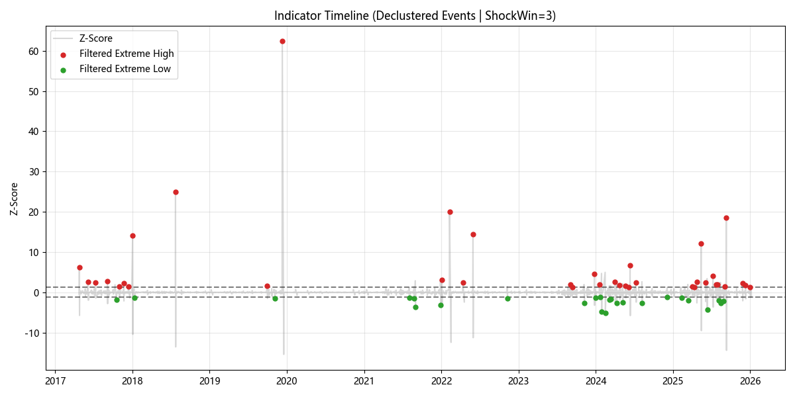
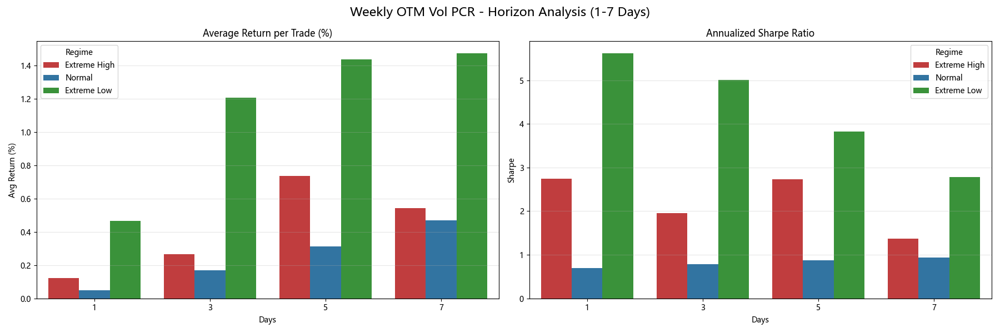
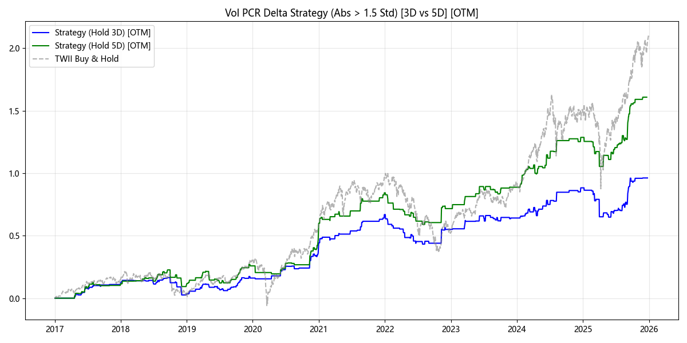

▌前言（Introduction）
本研究源自於大二期間加入系上教授實驗室，參與一項以當沖交易策略為核心的研究專案。在該專案中，我負責尋找可供模型學習的選擇權相關因子，以輔助短期交易決策。
在眾多選擇權指標中，我選擇 Put–Call Ratio（PCR） 作為研究主軸。原因在於 PCR 能同時反映市場的方向性情緒與避險需求結構，並且廣泛被應用於衍生性商品與市場結構研究中 。
1. 研究資料
- 標的資產：台灣加權股價指數。
- 選擇權資料：台指選擇權（TXO）。
- 研究期間：2016 年 – 2026 年。
2. 指標定義與背景知識
Put–Call Ratio（PCR）
PCR 定義為賣權與買權的比值：
$$PCR_t = \frac{Put_t}{Call_t}$$
本研究關注的是 變化量（Delta） 而非絕對水準（Level）： ΔPCRt = PCRt − PCRt − 1
為什麼不用 PCR Level？ PCR 水準可能長期偏高或偏低，容易混入結構性市場差異（如牛市/熊市環境。
數據類型與價位分類
- 未平倉量（Open Interest, OI）：市場中尚未平倉的合約數量。
- 成交量（Volume）：當日交易行為。
- 價位區分（Moneyness）：
- ITM（價內）
- ATM（價平）
- OTM（價外）
▌階段一：統計檢定
1. 研究目的
探討不同類型的選擇權指標變化，是否對隔日報酬具有顯著影響？
2. 實驗設計
- 特徵類型：包含 OI/Vol 的 PCR Delta、Put Delta、Call Delta，並區分整體與 ITM/ATM/OTM 維度。
- 檢定方式：使用兩樣本 t-test 比較「極端變化日（Z-score 門檻）」與「正常日」的隔日報酬 。
點擊展開：極端變化日的具體定義（Implementation Details）
🛠️ 指標分類邏輯
在本研究中，極端正向與極端負向變化的判定，係依據指標相對於其歷史分佈的位置進行分類。實作邏輯係透過計算Z-score 辨識異常波動 。
Step 1：計算統計量(Baseline Statistics)
對每一項選擇權指標（如 OI PCR Delta、Volume PCRDelta），先於整個歷史樣本期間計算其基準分佈：
- 平均值（Mean,
- 標準差（Standard Deviation,
Step 2：設定極端門檻(Threshold)
本研究採用的核心門檻設定為：
Step 3：分類規則(Classification Rule)
根據當日指標變化量（
極端正向 (Extreme Positive)當指標變化量滿足：
極端負向 (Extreme Negative)當指標變化量滿足：
正常 (Normal) 當指標變化量處於常態分佈區間：

各組分佈形狀大致相近，未出現明顯偏態或多峰結構。在此情況下，考量樣本數規模與研究目的，本文將 t-test視為初步篩選工具，用以辨識可能具備結構差異的指標，並於後續階段採用rolling 分析與 event study 進一步檢驗其穩定性與時間結構。
階段一：主要發現
在全樣本檢定中，僅有少數指標展現統計顯著性（
- OI PCRDelta：極端正向與負向變動皆顯著。
- Volume CallDelta：極端正向變動顯著 。
- OTM OI CallDelta：極端負向變動具備顯著性 。
點擊展開：階段一數據結果
選擇權指標 t 檢定彙整表 (Threshold = 1.5)
| 指標名稱 | 比較組 | t 值 | p-value | 極端天數 |
|---|---|---|---|---|
| OI PCR (整體) | 極端正向 | 2.1453 | 0.0335* | 139 |
| OI PCR (整體) | 極端負向 | 2.5565 | 0.0115* | 147 |
| Vol Call Delta (整體) | 極端正向 | 2.1299 | 0.0355* | 102 |
| OTM OI Call Delta | 極端負向 | -1.9884 | 0.0486* | 138 |
| — | — | — | — | — |
| Volume PCR (整體) | 極端正向 | -0.4917 | 0.6234 | 182 |
| Volume PCR (整體) | 極端負向 | -0.6390 | 0.5237 | 152 |
| Vol Put Delta (整體) | 極端正向 | 0.6364 | 0.5258 | 106 |
| Vol Put Delta (整體) | 極端負向 | 0.2580 | 0.7966 | 219 |
| Vol Call Delta (整體) | 極端負向 | 0.3952 | 0.6931 | 221 |
| ITM Vol Call Delta | 極端正向 | 1.5217 | 0.1309 | 106 |
| ITM Vol Call Delta | 極端負向 | -0.0594 | 0.9527 | 99 |
| ITM Vol Put Delta | 極端正向 | 1.3602 | 0.1772 | 89 |
| ITM Vol Put Delta | 極端負向 | -0.0591 | 0.9530 | 90 |
| ITM Vol PCR Delta | 極端正向 | 0.9473 | 0.3497 | 37 |
| ITM Vol PCR Delta | 極端負向 | 0.7544 | 0.4553 | 38 |
| ATM Vol Call Delta | 極端正向 | 0.6004 | 0.5496 | 93 |
| ATM Vol Call Delta | 極端負向 | -1.1782 | 0.2396 | 270 |
| ATM Vol Put Delta | 極端正向 | 0.6955 | 0.4883 | 99 |
| ATM Vol Put Delta | 極端負向 | -0.0034 | 0.9973 | 252 |
| ATM Vol PCR Delta | 極端正向 | 1.1631 | 0.2494 | 60 |
| ATM Vol PCR Delta | 極端負向 | 0.2673 | 0.7901 | 63 |
| OTM Vol Call Delta | 極端正向 | 0.8268 | 0.4098 | 129 |
| OTM Vol Call Delta | 極端負向 | 0.4007 | 0.6893 | 137 |
| OTM Vol Put Delta | 極端正向 | -0.2775 | 0.7818 | 143 |
| OTM Vol Put Delta | 極端負向 | -1.2885 | 0.1996 | 141 |
| OTM Vol PCR Delta | 極端正向 | 0.1092 | 0.9132 | 140 |
| OTM Vol PCR Delta | 極端負向 | 0.0044 | 0.9965 | 135 |
| ITM OI Call Delta | 極端正向 | 0.3633 | 0.7168 | 135 |
| ITM OI Call Delta | 極端負向 | 0.4492 | 0.6541 | 119 |
| ITM OI Put Delta | 極端正向 | 0.5309 | 0.5966 | 106 |
| ITM OI Put Delta | 極端負向 | -0.7150 | 0.4762 | 99 |
| ITM OI PCR Delta | 極端正向 | 1.7347 | 0.0883 | 57 |
| ITM OI PCR Delta | 極端負向 | -0.8681 | 0.3895 | 50 |
| ATM OI Call Delta | 極端正向 | 1.1294 | 0.2624 | 65 |
| ATM OI Call Delta | 極端負向 | -1.4435 | 0.1498 | 245 |
| ATM OI Put Delta | 極端正向 | 0.5908 | 0.5563 | 73 |
| ATM OI Put Delta | 極端負向 | -1.2165 | 0.2247 | 258 |
| ATM OI PCR Delta | 極端正向 | 0.4936 | 0.6227 | 98 |
| ATM OI PCR Delta | 極端負向 | 0.4108 | 0.6821 | 94 |
| OTM OI Call Delta | 極端正向 | 0.0201 | 0.9840 | 105 |
| OTM OI Put Delta | 極端正向 | -1.3134 | 0.1948 | 51 |
| OTM OI Put Delta | 極端負向 | 0.3747 | 0.7083 | 155 |
| OTM OI PCR Delta | 極端正向 | 0.8485 | 0.3977 | 119 |
| OTM OI PCR Delta | 極端負向 | 0.6923 | 0.4900 | 119 |
註記： 標註 粗體* 處代表具備統計顯著性 (p < 0.05) 2。
3. 階段一方法的限制
儘管篩選出部分指標，但此方法存在明顯缺點：
- 忽略市場狀態：將所有樣本視為同質，掩蓋了特定環境下的有效訊號。
- 靜態標準化不足：全樣本平均值無法反映當下市場結構的相對異常。
▌階段二：結構化與時變分析（Weekly / Monthly × Rolling Standardization）
1. 研究動機
在第一階段的靜態檢定中，我發現大多數選擇權指標（特別是成交量相關的 PCR 類指標），在全樣本、靜態比較下並不顯著。 但這並不代表指標本身沒有資訊，而是可能被以下因素掩蓋：
- 不同到期結構混在一起：週選與月選的交易動機明顯不同，直接合併分析容易稀釋訊號。
- 市場狀態隨時間改變：使用全期間的平均與標準差，可能無法反映某些特定時段的「異常行為」。
- PCR 類指標可能不是線性預測因子：PCR 類指標可能屬於 「結構／事件型」 訊號，其資訊性僅在相對極端、非常態的狀態下顯現。
因此，第二階段的核心目標是驗證：PCR 類指標是否對「選擇權結構」與「當下市場狀態」具有高度敏感性？
2. 方法設計
本研究引入兩個關鍵改動，將分析維度從「絕對值」轉向「相對衝擊」：
依選擇權到期型態區分（Strict Separation）
- 週選擇權 (Weekly Options)：存續期間短，通常用於短期避險、事件交易與方向性押注。
- 月選擇權 (Monthly Options)：存續期間較長，更偏向中長期部位配置與策略性避險。
Rolling 標準化（Time-Varying Normalization）
為辨識相對於當下市場狀態的 異常變化（Shock），對每日 PCR Delta 進行滾動標準化：
- 窗口大小：過去 252 個交易日。
- Rolling Z-score 公式： $$Z_t = \frac{\Delta PCR_t - \mu_{rolling}}{\sigma_{rolling}}$$ 其中 μ 為滾動平均值，σ 為滾動標準差。
3. 核心結果與解讀
(一) Weekly × Volume PCR Delta：
在週選成交量 PCR 的 Rolling 分析中，呈現出顯著的狀態切換特性：
| 特徵指標 (Feature) | 訊號類別 | 樣本數 (n) | 平均報酬 | 夏普值 (Sharpe) |
|---|---|---|---|---|
| OTM Vol PCR Delta | 極端正向 | 51 | 0.1240% | 3.92 |
| 極端負向 | 50 | 0.1814% | 4.04 | |
| 正常區間 | 1766 | 0.0573% | 1.65 |
從 Rolling 結果來看，週選 OTM 成交量 PCR 在極端狀態下的 Sharpe Ratio 明顯高於正常區間，且正負方向皆呈現類似行為，顯示該指標較可能反映市場短期結構變化，而非單純的多空方向訊號。不過，此差異是否源自特定交易行為或市場機制，仍有待進一步分析。
(二) Weekly × OI PCR Delta：
與成交量的「即時性」不同，未平倉量（OI）展現出籌碼累積特性：
- 單邊效應：正極端變化結果較明顯（Sharpe = 4.71），負向效果(Sharpe = 1.67)則與 Normal 差異不大。
- 相較於 Volume PCR，OI PCR 的效果呈現出較明顯的不對稱性，顯示其可能更多捕捉的是市場部位配置的方向性變化，而非事件型的即時衝擊。
(三) Monthly 選擇權：效果顯著稀釋
在月選合約中，Rolling 極端狀態與 Normal 區間的差異普遍不明顯。
由於月選合約存續期間較長，其成交量與未平倉量變化可能同時反映中長期部位配置、策略性避險與展期行為，使得短期相對異常變化的資訊性被稀釋。因此，在本研究設定的短期預測與狀態辨識框架下，月選選擇權較不適合作為敏感的市場狀態指標。
基於上述觀察，後續分析將聚焦於對短期情緒與事件反應更為敏感的 Weekly Options。
點擊展開：rolling 回測結果
週選擇權滾動測試回測數據 (Weekly Options - Rolling Test)
| 特徵指標 (Feature) | 訊號類別 | 樣本數 (n) | 平均報酬 | 夏普值 (Sharpe) |
|---|---|---|---|---|
| OI PCR Delta | 極端正向 | 109 | 0.1782% | 4.71 |
| 極端負向 | 118 | 0.0689% | 1.67 | |
| 正常區間 | 1640 | 0.0542% | 1.58 | |
| Vol PCR Delta | 極端正向 | 120 | -0.0542% | -1.31 |
| 極端負向 | 126 | 0.0527% | 1.33 | |
| 正常區間 | 1621 | 0.0718% | 2.11 | |
| OTM Vol PCR Delta | 極端正向 | 51 | 0.1240% | 3.92 |
| 極端負向 | 50 | 0.1814% | 4.04 | |
| 正常區間 | 1766 | 0.0573% | 1.65 |
月選擇權滾動測試回測數據 (Monthly Options - Rolling Test)
| 特徵指標 (Feature) | 訊號類別 | 樣本數 (n) | 平均報酬 | 夏普值 (Sharpe) |
|---|---|---|---|---|
| OI PCR Delta | 極端正向 | 111 | 0.0708% | 1.84 |
| 極端負向 | 112 | 0.0918% | 2.35 | |
| 正常區間 | 1960 | 0.0619% | 1.83 | |
| Vol PCR Delta | 極端正向 | 145 | 0.0553% | 1.90 |
| 極端負向 | 151 | 0.0999% | 3.28 | |
| 正常區間 | 1887 | 0.0617% | 1.76 | |
| OTM Vol PCR Delta | 極端正向 | 113 | 0.0256% | 0.98 |
| 極端負向 | 100 | 0.0233% | 0.79 | |
| 正常區間 | 1970 | 0.0682% | 1.94 |
4. 階段二小結
整體結果顯示，PCR 類指標的資訊性並非普遍存在，而是依賴於選擇權結構與市場狀態。相較於月選合約，週選選擇權的變化更能即時反映短期市場行為。
其中，OTM Volume PCR Delta 並未在第一階段呈現顯著效果，而是在週選選擇權中，當指標相對於近一年水準出現明顯偏離時，才展現出優於正常狀態的風險調整後表現。這樣的行為特性暗示，該指標較可能反映市場於非常態時刻的結構性調整，而非持續性的預測關係。
在確認此類「異常狀態」具備顯著的績效差異後，研究進一步關注其時間動態特性：
這些由選擇權市場觸發的衝擊，其影響通常會在多長的時間內被市場吸收與消化？
▌階段三：Event Study（事件研究與時間傳導分析）
1. 研究動機
在第二階段中，我們確認了 Weekly OTM Volume PCR Delta 在發生異常變動後時，市場會進入較可預測的狀態。然而，這引出了一個關鍵問題：
「這類 Shock 對市場的影響，會在多長時間內被價格消化？」
本階段的研究重點在於釐清：
- 反應速度：影響是立即反應還是逐步發酵？
- 持續性：訊號是短暫的情緒衝擊，還是可持續的結構改變？
- 系統性差異：不同類型的 PCR 在時間傳導上是否有顯著不同？
2. 事件定義與實驗設計
事件定義（Event）
- 觸發條件：當 Weekly OTM Volume PCR Delta 出現極端變化（Z-score > 閾值）時，定義為一個事件。
- 定位點：儘管指標源於週選資料，但指標為每日產生，因此事件時間點可精確定位至特定交易日。
另外，當我想確認指標出現的時機的時候，我注意到一個有趣但值得警惕的現象。 當 OTM Volume PCR 變化量 出現大幅變化時，這些極端點有時不是零星、獨立地出現，而是在時間上高度集中。實際上，經常可以觀察到： 極端正向隔一至兩天後，接續出現方向相反的極端負向訊號。
下圖展示了極端訊號在時間軸上的分布情形（極端點分布圖）：

可以看到，極端正負訊號常呈現群聚的型態，而非彼此獨立。
如果我們在績效分析中，把每一個極端點都當成一筆獨立樣本，就會產生一個潛在偏誤：
同一個市場事件（例如：一次避險需求爆發），可能在 2–3 天內連續觸發極端訊號，卻被重複計入績效統計中， 這樣會導致樣本數被放大，Sharpe Ratio 被高估。
在進入事件研究之前，有必要先處理這個「事件重複計算」的問題。因此，我引入Event Window概念。
Event Window 的設計邏輯
當某一天的指標滿足 ∣ 𝑍𝑡 ∣ > threshold 時，視為事件候選日。接下來的w 個交易日（ShockWindow）：
- 僅保留 Z-score 絕對值最大的那一天作為「事件日」，其餘極端點視為同一事件的延續，不重複計算。
這樣的設計，能確保：
- 每一筆樣本對應一個獨立市場衝擊，避免因連續高波動而高估效果。
本研究主要使用 Shock Window =3，在避免重複計算與保留足夠樣本之間取得平衡。
預測視窗
本研究考察事件發生後不同持有期間的報酬表現，以觀察報酬隨時間的累積效應：
考察區間：1 日、3 日、5 日、7 日。
3. 核心結果：時間傳導特性
(一) OTM Volume PCR Delta：延遲但持續的影響
根據 Event Study 結果顯示，這類指標展現出顯著的「逐步發酵」特性：
下圖比較 OTM Volume PCR Delta 在不同預測視窗（1、3、5、7 日）下的平均報酬與風險調整後表現。

圖表解讀：
在 1 日視窗： 極端狀態已能觀察到明顯高於 Normal 的 Sharpe ratio與平均報酬，顯示該訊號具有即時反應市場的特性
在 3–5 日視窗： 極端負向組的 Sharpe ratio與平均報酬達到高點，顯示市場存在短期延續效果
在 7 日視窗： 極端與 Normal的差距開始收斂，事件影響逐步被市場吸收。
整體來看，OTM Volume PCR Delta 的影響最集中於 3–5 日區間。
在引入 Event Window 以避免連續訊號重複計算後，Weekly OTM Volume PCR Delta 的極端變化仍然展現出明顯優於正常狀態的風險調整後表現。
儘管在樣本數有限的情況下，傳統的非母數檢定未顯示穩定的統計顯著性，但其 Sharpe Ratio 在多數預測視窗（特別是 3–5 日）仍顯著高於正常區間，顯示該指標更可能反映 事件型 市場狀態的結構差異，而非穩定的平均報酬偏態。
點擊展開：rolling 回測結果
台股週選擇權事件研究彙整表 (ShockWin=3, Threshold=1.25)
| 因子名稱 | 持有期 | 訊號類別 | 年化報酬 | 夏普比率 (Sharpe) | 勝率 | 樣本數 (n) |
|---|---|---|---|---|---|---|
| 1. OI PCR Delta | 1d | Extreme High | 45.93% | 3.52 | 63.24% | 68 |
| Extreme Low | 11.62% | 0.53 | 54.44% | 90 | ||
| Normal | 12.55% | 0.70 | 55.12% | 1709 | ||
| 3d | Extreme High | -5.54% | -0.19 | 54.41% | 68 | |
| Extreme Low | 88.79% | 2.79 | 58.89% | 90 | ||
| Normal | 45.06% | 1.45 | 57.64% | 1707 | ||
| 5d | Extreme High | 108.32% | 3.04 | 67.65% | 68 | |
| Extreme Low | 89.81% | 2.21 | 52.22% | 90 | ||
| Normal | 81.73% | 2.03 | 59.71% | 1705 | ||
| 7d | Extreme High | 107.21% | 2.58 | 67.65% | 68 | |
| Extreme Low | 110.04% | 2.38 | 57.78% | 90 | ||
| Normal | 122.26% | 2.55 | 61.48% | 1703 | ||
| 2. OTM Vol PCR Delta | 1d | Extreme High | 52.52% | 4.49 | 65.79% | 38 |
| Extreme Low | 74.00% | 3.93 | 52.00% | 25 | ||
| Normal | 12.07% | 0.67 | 55.21% | 1804 | ||
| 3d | Extreme High | 27.43% | 0.65 | 60.53% | 38 | |
| Extreme Low | 210.68% | 6.40 | 68.00% | 25 | ||
| Normal | 43.41% | 1.41 | 57.38% | 1802 | ||
| 5d | Extreme High | 140.84% | 3.29 | 65.79% | 38 | |
| Extreme Low | 222.80% | 5.67 | 60.00% | 25 | ||
| Normal | 79.94% | 2.00 | 59.50% | 1800 | ||
| 7d | Extreme High | 90.49% | 1.96 | 52.63% | 38 | |
| Extreme Low | 257.83% | 5.52 | 68.00% | 25 | ||
| Normal | 119.87% | 2.52 | 61.62% | 1798 |
台股週選擇權事件研究彙整表 (ShockWin=3, Threshold=1.5)
| 因子名稱 | 持有期 | 訊號類別 | 年化報酬 | 夏普比率 (Sharpe) | 勝率 | 樣本數 (n) |
|---|---|---|---|---|---|---|
| 1. OI PCR Delta | 1d | Extreme High | 45.93% | 3.52 | 63.24% | 68 |
| Extreme Low | 11.62% | 0.53 | 54.44% | 90 | ||
| Normal | 12.55% | 0.70 | 55.12% | 1709 | ||
| 3d | Extreme High | -5.54% | -0.19 | 54.41% | 68 | |
| Extreme Low | 88.79% | 2.79 | 58.89% | 90 | ||
| Normal | 45.06% | 1.45 | 57.64% | 1707 | ||
| 5d | Extreme High | 108.32% | 3.04 | 67.65% | 68 | |
| Extreme Low | 89.81% | 2.21 | 52.22% | 90 | ||
| Normal | 81.73% | 2.03 | 59.71% | 1705 | ||
| 7d | Extreme High | 107.21% | 2.58 | 67.65% | 68 | |
| Extreme Low | 110.04% | 2.38 | 57.78% | 90 | ||
| Normal | 122.26% | 2.55 | 61.48% | 1703 | ||
| — | — | — | — | — | — | — |
| 2. OTM Vol PCR Delta | 1d | Extreme High | 31.09% | 2.74 | 61.29% | 31 |
| Extreme Low | 117.23% | 5.61 | 58.82% | 17 | ||
| Normal | 12.46% | 0.69 | 55.25% | 1819 | ||
| 3d | Extreme High | 66.62% | 3.38 | 58.06% | 31 | |
| Extreme Low | 303.59% | 8.67 | 76.47% | 17 | ||
| Normal | 42.55% | 1.36 | 57.40% | 1817 | ||
| 5d | Extreme High | 185.56% | 6.09 | 64.52% | 31 | |
| Extreme Low | 362.08% | 8.56 | 64.71% | 17 | ||
| Normal | 78.73% | 1.96 | 59.50% | 1815 | ||
| 7d | Extreme High | 136.94% | 3.62 | 54.84% | 31 | |
| Extreme Low | 370.82% | 7.38 | 76.47% | 17 | ||
| Normal | 118.51% | 2.48 | 61.50% | 1813 |
(二) 指標對照：OI 與整體 Volume
- OI PCR Delta：效果反應較快，但隨時間累積的動能較弱，符合「部位調整（Positioning）」的直覺。
- 整體 Volume PCR Delta：表現較不穩定，證實 OTM 篩選 對於捕捉「尾端結構」至關重要。
4. 結構拆解：Dominance Test (Put vs Call)
為進一步釐清訊號來源，研究將極端事件依結構拆分為 買權主導 與 賣權主導：
| 策略分組 | 樣本數 | 1d Return | 3d Return | 5d Return | 7d Return |
|---|---|---|---|---|---|
| Call Dominant (Call Δ > Put Δ) | 3 | -0.02% | 0.01% | 0.40% | 0.16% |
| Put Dominant (Put Δ ≥ Call Δ) | 43 | -0.02% | 0.27% | 0.61% | 0.67% |
註記：
- Group 1: CallΔ > PutΔ (買權 Delta 較大)
- Group 2: PutΔ ≥ CallΔ (賣權 Delta 較大或相等)

結果解讀
從結果可觀察到兩個清楚但需要謹慎解讀的現象：
在所有被識別為 OTM Volume PCR 極端事件中，絕大多數屬於 Put Dominant。這代表 PCR 的異常下降，並非主要來自買權成交量的爆發，而更常是價外賣權成交量的快速萎縮。 Put Dominant結構下，報酬呈現較一致的中短期延續性 在 3d–7d 的持有期間內，Put Dominant組別的平均報酬呈現穩定正向，且 Sharpe 表現亦顯著高於 Call Dominant。相對地，Call Dominant因樣本極少，結果不具備可解釋的統計穩定性，僅作為結構對照。以下是我認為較符合的經濟意涵：
1.原本集中於價外 Put 的避險交易快速退場
2.PCR 下降是由 恐慌性避險動能衰竭 所驅動。
4. 事件前後比較：

關鍵解讀：
由上圖可以看到 :
一、 OTM Volume PCR Delta的下降，代表價外賣權相對於價外買權的成交量動能明顯減弱。從成交結構的角度來看，這類事件通常發生於市場避險需求快速降溫的時段，顯示原本集中於價外賣權的交易活動出現明顯收斂。此現象未必直接代表多頭立場的形成，但可視為市場情緒由高度防禦狀態轉向中性或重新配置的訊號。
二、 Event Study結果顯示，在訊號觸發後，市場報酬並非一次性反應，而是呈現出逐步消化的特性。在多數事件中，累積報酬曲線於
三、 搭配日內振幅（IntradayRange）的觀察，可以發現訊號觸發前後，市場波動水準往往出現下降趨勢。這代表該類事件不僅影響價格方向，也可能伴隨風險結構的改變，使市場進入「較低波動」的狀態。此特性對於後續策略設計（無論是方向性或波動相關策略）具有參考價值。
5. 階段三小結：研究意義
第三階段的結果顯示，OTM 成交量 PCR 的極端變化，並不是單純反映當天市場情緒，而是常常出現在市場行為即將轉變的關鍵時刻。
具體來說，當這類訊號出現時，市場後續數天的走勢往往不會立刻結束，而是呈現出一段相對穩定的延續反應。這表示該指標較適合用來判斷「接下來幾天市場環境是否偏向有利」，而不是用來預測隔日漲跌。
因此，OTM Volume PCR Delta 的主要價值，在於協助辨識短期市場狀態的轉換，作為交易與風險判斷的輔助依據，而非單獨使用的即時買賣訊號。
▌結論與展望
1.總結
最後想用這張圖做總結，這是我寫的一個策略回測，測試期間是2017年到2026年，標的是台灣加權指數(灰線)，策略是當價外成交量Put Call Ratio 變化量絕對值大於 1.5 倍標準差時，隔天開盤就進場買進，藍色是三天後平倉，綠色是五天後平倉。
可以發現，綠線明顯更貼齊灰線，並明顯高於藍線，此外最重要的是，綠線的最大回徹明顯小於灰線，在市場大跌時，報酬沒有顯著的變動，而犧牲的是它的獲利能力。
這個結果相當符合之前的各種檢定，價外成交量Put Call Ratio 變化量 顯著變化時，3到5天內的市場報酬是相對穩定的，且波動度並沒有顯著的變化。

2.未來展望
基於本研究對 OTM 選擇權 PCR 極端事件的實證結果，未來可從以下兩個方向進一步延伸：
可嘗試結合更多市場風險相關指標，例如隱含波動率的變化，觀察在極端事件前後，市場是否同時出現風險定價的調整，進一步補強對市場狀態轉換的理解。
檢驗其他成熟指數選擇權市場（如 S&P 500 指數選擇權），或流動性較高的個股選擇權標的，以比較不同市場制度、參與者結構與流動性條件下，PCR訊號的表現差異與穩健程度。
▌結語
從長期績效曲線，以及各種檢定可發現，OTM Vol PCR 極端事件所構成的策略雖非追求市場最高報酬，但能在多空循環中穩定累積報酬並有效抑制回撤，顯示其核心價值在於提供一種具備防禦性的結構型 Alpha，而非短期博弈型訊號。